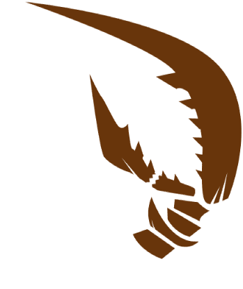

Gregor

"Als ich aus unruhigen Träumen erwachte, hatte ich mich in ein ungeheures Ungeziefer verwandelt."
"As I awoke from unsettling dreams, I had transformed into some hideous pest."
Gregor (Hangul: 그레고르, Geuregoreu)
Gregor foi designado como o Sinner #13 do departamento da LCB(Limbus Company Bus)
Gregor é um homem bem-humorado e tranquilo, com um toque de competitividade. Ele já foi afiliado à Guerra da Fumaça, tendo lutado pela antiga G Corp. ao lado de outros indivíduos geneticamente modificados por insetos, antes de se juntar à Limbus Company.
Sobre
Este indivíduo é relativamente fácil de lidar em termos de personalidade. No entanto, uma explosão emocional ou uma mudança repentina de ambiente pode fazer com que partes ou todo o seu corpo se transformem em tecidos semelhantes aos de insetos (notavelmente semelhantes a uma carapaça, como a de um inseto).
Se você não deseja ser um gerente grosseiro (não que você seja obrigado a ser gentil), recomendamos controlar sua expressão facial para que seu desgosto não transpareça para ele. Ele às vezes usa uma linguagem cínica, mas ainda é possível dialogar com ele, e você pode se virar com ele sem muita dificuldade, desde que aprenda a lidar com a situação.